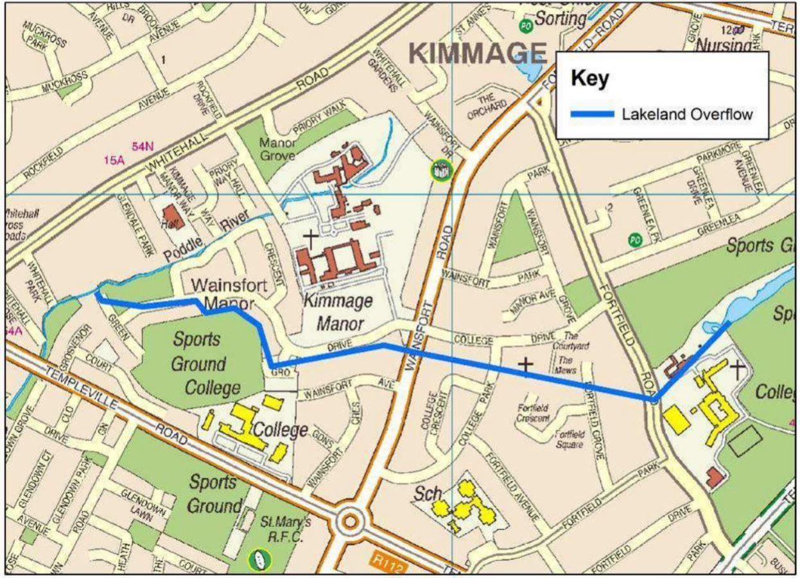
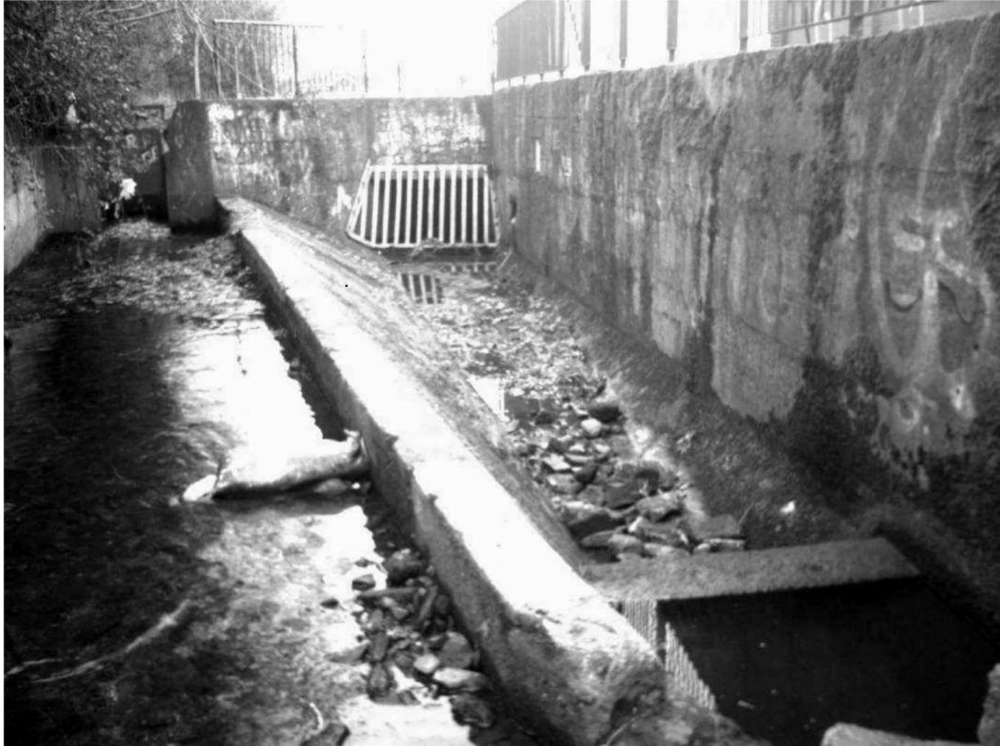
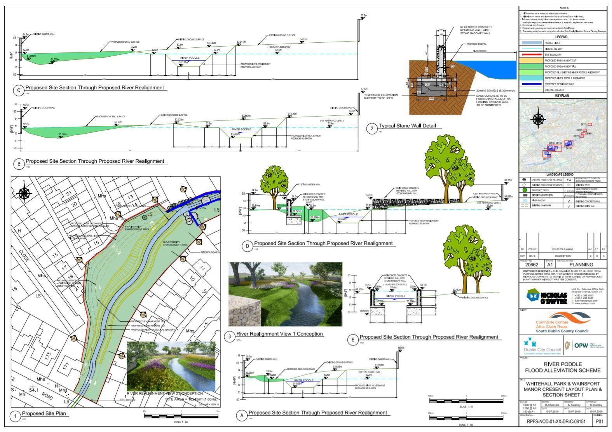
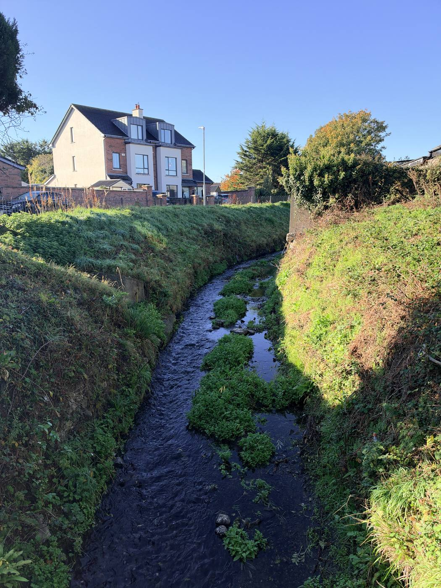

Stop 6 of 18 · Lakelands, Terenure
Dodder Overflow
A sluice that sends flood water back to the Dodder.
Diversion
Upstream of Kimmage Manor, where the Poddle begins its first long run in culverts, the river divides twice. This is the first. Unlike the second, it sends high water out of the Poddle and into the Dodder catchment, by way of storage ponds in Terenure.
Overflow to Terenure
A sluice gate limits how much water carries on towards Kimmage and Kimmage Road Lower. The overflow runs through culverts to the ponds at Terenure College, which drain back to the Dodder at Bushy Park.
An old record of the City Watercourse says a stream taken off it in Terenure fed three fishponds, so the idea of ponds there is an old one. You can follow the overflow on the map page, where it is drawn as a green dashed line from the point where it leaves the Poddle beside Whitehall Park to the lake in the grounds of Terenure College. The line is approximate, since the culverts are underground.
This is the downstream end of the flow controls and channel works in the River Poddle Flood Alleviation Scheme. The scheme followed serious floods in Harold’s Cross and Kimmage in 1987, 1990, 1993 and 2011. It was approved by An Bord Pleanála in June 2023, the Office of Public Works began building it in April 2024, and it is due to be finished in 2027.
Refined and defined
Along this stretch, the scheme proposes to tidy and define the channel and build walls on both sides.
Flows through the Poddle in earlier centuries must have been large, without the ponds at Tymon or these control structures, and with water diverted in from the Dodder at Balrothery as well.
Mount Down: where the Poddle begins
Just east of Tymon Park the river runs behind the houses on Limekiln Road, under a bridge at Wellington Lane, and turns north towards Templeville Road. Near here, on land between today’s Glendown Grove and Wellington Lane, the City Watercourse from the Dodder met the Tymon River, and from that meeting the stream is the Poddle proper. Mount Down House and its mill stood beside the junction.
The house had 47 acres beside Kimmage Manor and Orwell House. Its residents included Anna Danford (1886 to 1888), Anna and Sir Robert Herron (1888 to 1895), and Thomas Franks and John Kean (1895 to 1916). The Cullen family farmed there from 1916 to 1969, mostly dairy cattle, and lit the house with a generator driven by the two streams. The mill beside the house was not worked in their time. The house was knocked down in 1973 for the Glendown estate and St Mary’s Rugby Club; two chestnut trees from its avenue still stand in Glendown.
In 1952 Peter Cullen sued Dublin Corporation for £20,000 and an injunction, claiming that the ancient water supply that had turned his mill since 1244 had been dwindling since 1938. He valued the property at £10,000 with the water and £7,000 without. The Corporation denied reducing the flow or that he had any right to it, and the claim was dismissed.
Source: The Story of Templeogue (1992); newspaper reports, 1952.
Willington and Osprey
On the eastern side of Tymon Park the river runs between the Willington and Osprey estates and Limekiln Road. The Willington name may come from nearby Wellington Lane.
In 1954 this was the scene of a famous arrest. John Broe, a 30-year-old housebreaker the papers called “The Phantom”, had kept Dublin talking with a run of daring burglaries. Detective Officer Christopher Lang spotted him hiding under a haycock near Wellington Lane and chased him to the Poddle, where they fought for twenty minutes. Broe got away, but Gardaí John Egan and Walter Dowd soon found him in a ditch nearby.
When the estates were built in the early 1970s, they went over the 700-year-old Dodder branch of the City Watercourse, and under the neighbouring Glendown estate the channel was put in a culvert. Historians objected at the time: a 1972 article warned that the watercourse at Wellington Lane faced destruction with no plan to preserve it, and Sister Ann Dominica Fitzgerald campaigned to save it.
In 1978, only six years after the houses went up, storms flooded the new estates. The Poddle burst its banks at Templeogue and homes in Osprey Drive were flooded again and again; residents such as Peter and Kathleen Smith described struggling with each new flood. Councillor Seán Walsh blamed the drainage, especially a culvert at Wellington Lane too small for the run-off from the new estates. Residents felt the council had been slow to act, and said it was the State, not the developer, that paid into the emergency fund for repairs.
Watch and read
From the planning file
Facts from the flood scheme’s planning application and four local planning files.
People
- Sister Ann Dominica Fitzgerald: The first Poddleologist
Parts of this page draw on research by the volunteers of the Crumlin and Walkinstown History Group, shared with poddle.ie. About their research.



